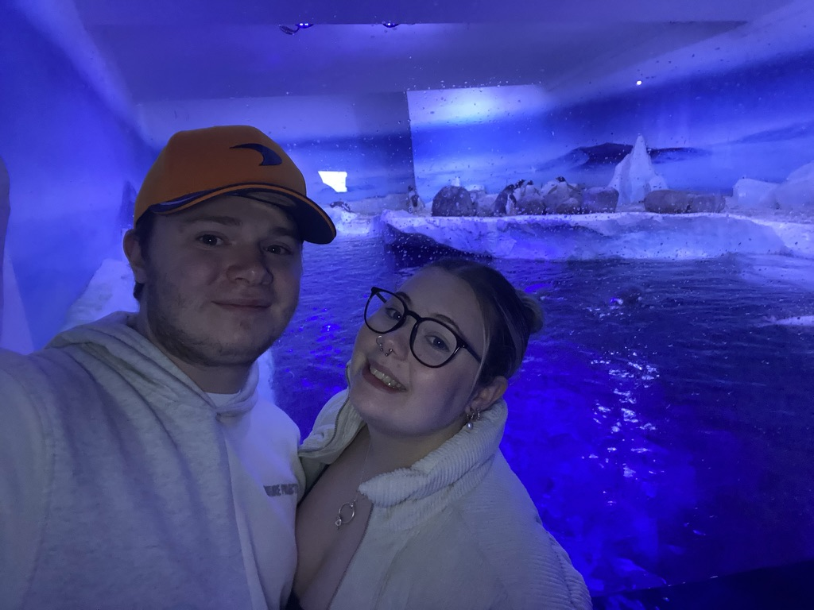
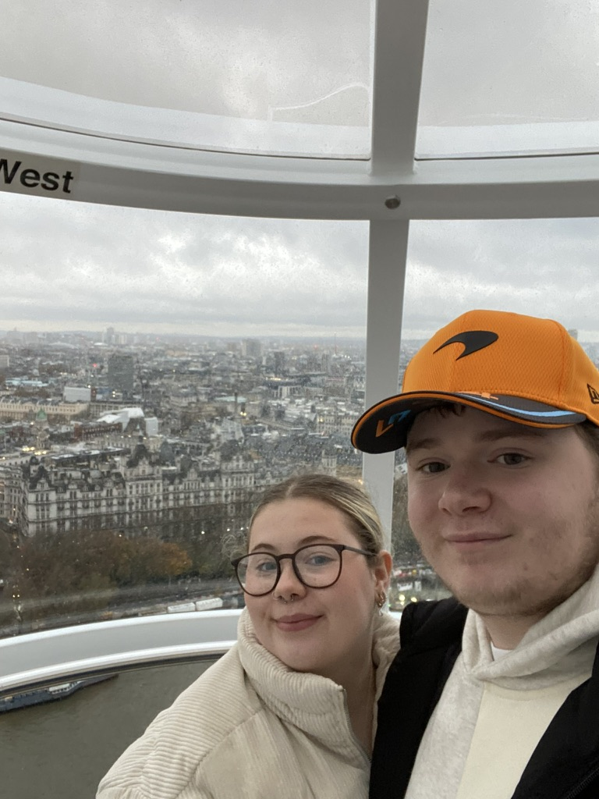

Welcome to Day 1 of a short 2-day trip to London for Jake's 21st Birthday.
It was Jakes 21st so we started the day early with an 8 am start which was not ideal, but the Premier Inn breakfast we had not too long after made that early start 10x better. With a short walk from the hotel to the train station we caught the St Albions to St Pancreas train on the Thames Link to get into London just after 10. Avoiding the tubes we decided to walk our way into the London city centre to be greeted by a whole host of London landmarks such as Big Ben and the London Eye.
Making good use of our Merlin passes while we were there. Shrek Adventure was our first pass-stop, we headed in to be rejected for some stickers cause we were 'too old' apparently we made our way onto a bus ride driven by Donkey who made an error and got a very angry Ruplestliskin after use, to help us get to safety we followed a host of people such as Cinderella, A Fortune Teller, A Bartender, A Servant, and A Baker which all led us to Princess Fiona in her prison cell. The seats in the prison were not for the faint-hearted and by that, I mean me who has a phobia of rats. The seats moved as if rats were crawling underneath them, wasn't ideal! After Shrek helped us escape we headed to the gift shop where Jake bought his first pin badge of the trip.
Next up was the decision of lunch after a long walk around we found a Wagamas and enjoyed a meal in there, Jake ordered the Spicy Beef Brisket Donburi bowl which led to a pile of onions being left on a napkin next to him, and I ordered a Chicken and Prawn Pad Thai. Once we filled ourselves up with some food we took a walk around Covent Gardens to have a look at what was going on around there and ended up purchasing are London duck 'Big Ben'. Leicester Square was our next stop with a quick trip to the Lego store for Jake. After this, we headed to Sealife which was so much bigger than the Blackpool Sealife. We took about an hour to look around the aquarium Jake making a 'what he thought was funny' joke about me and the penguins being the same because apparently I walk like them!
The London Eye was the last stop of the day which was a 45-minute slow-moving ride to see all the sights of London which was amazing!! Once we'd had a trip on the eye we had a quick walk over to Black Friar's station to catch the Thames Link back to St Ablions for the night. Once we got off the train we had a nice walk around St Albions and stopped to grab a hot drink on the way round. Once we got back to the hotel Jake sat and opened all of his birthday cards. Tea was a debated topic however we decided to eat in the very nice hotel restaurant Jake had a Burger and a side of Mac'N'Cheese and I had the Steak pie and a side of Garlic Dough Balls.
After we'd eaten we took ourselves back up to the room for a glass of BuckFizz for the birthday occasion and sat and watched some TV to end the night.